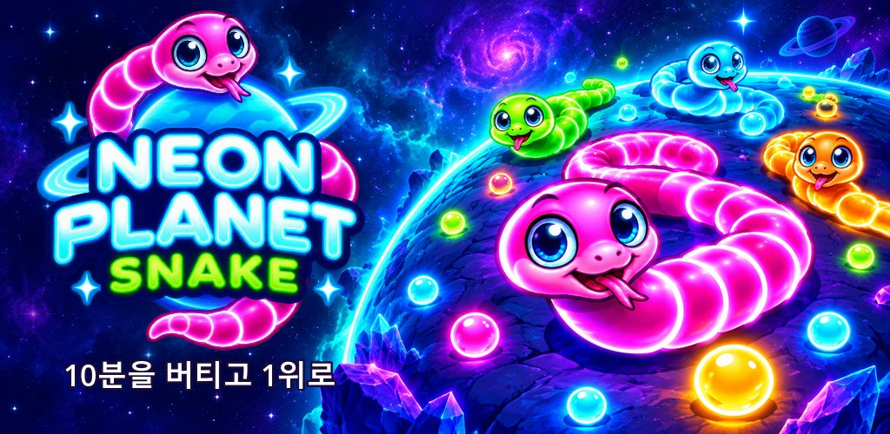
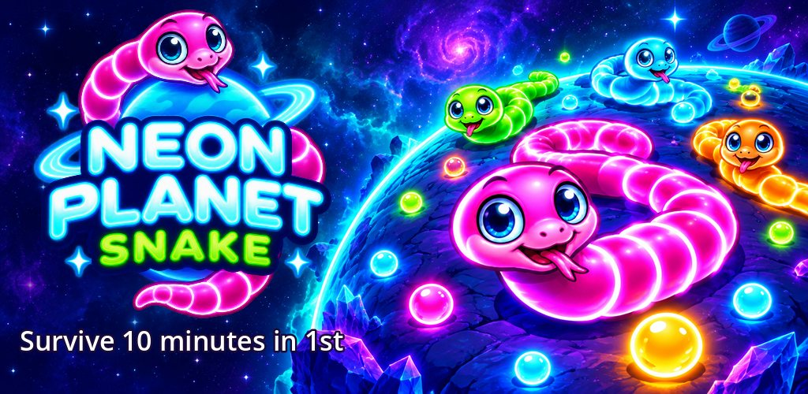
끝이 없는 행성에서 벌어지는 뱀 서바이벌. 10분 버텨 1등이면 클리어!
Coil the planet and devour. Survive 10 minutes in 1st place to clear the stage.
Google Play에서 보기 Get it on Google Play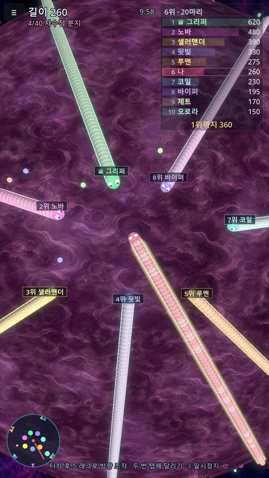
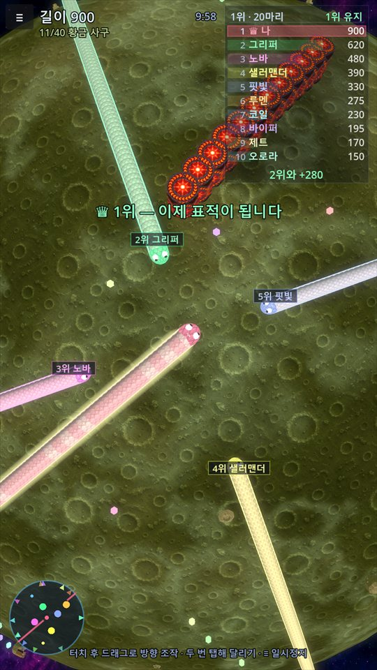
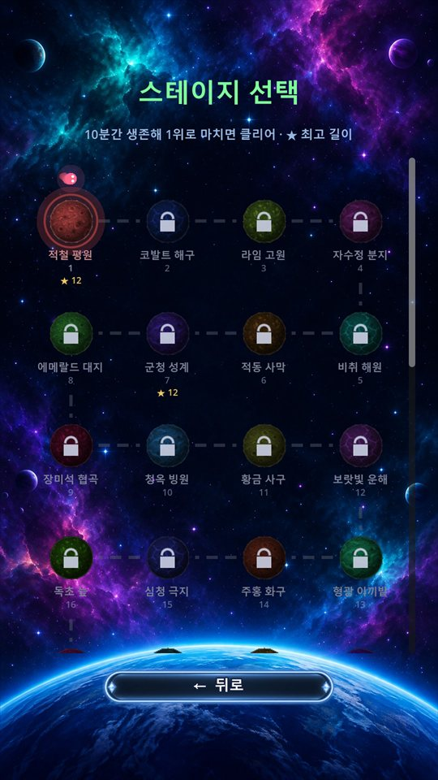
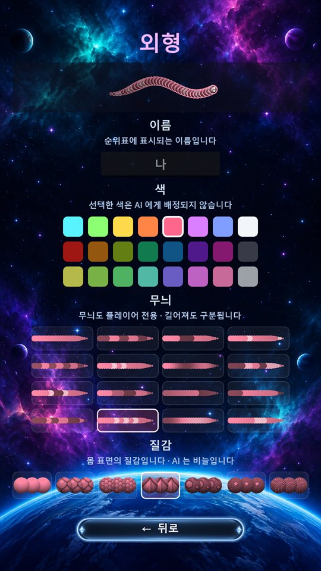
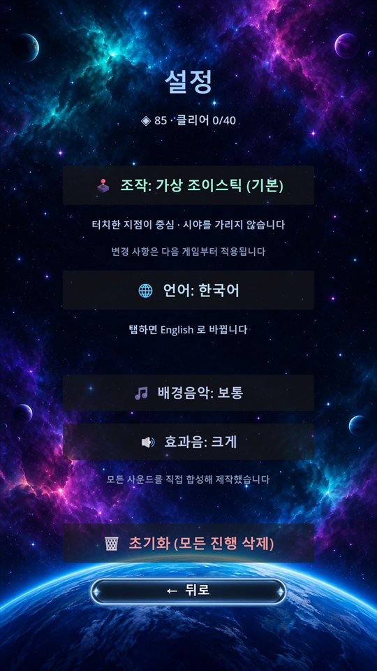
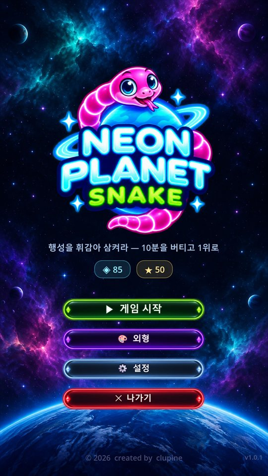
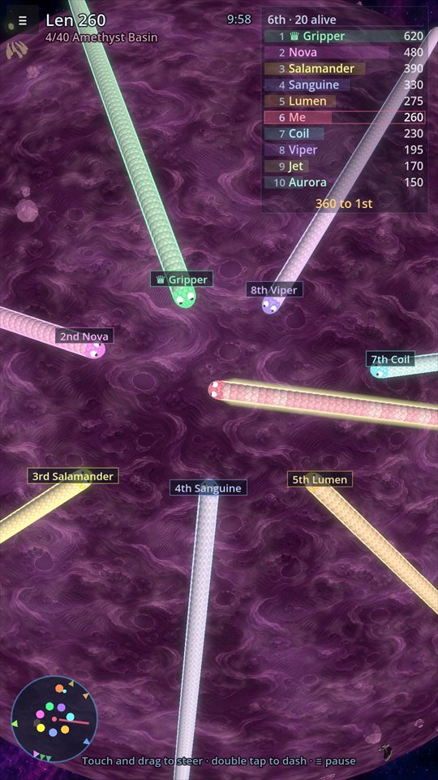
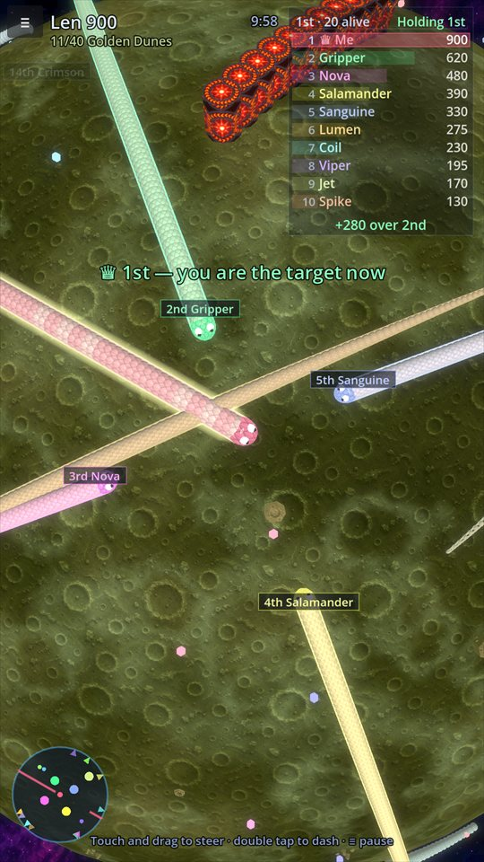
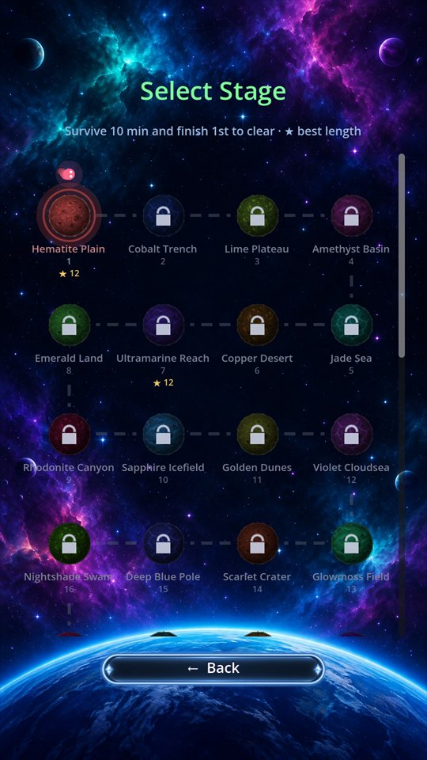
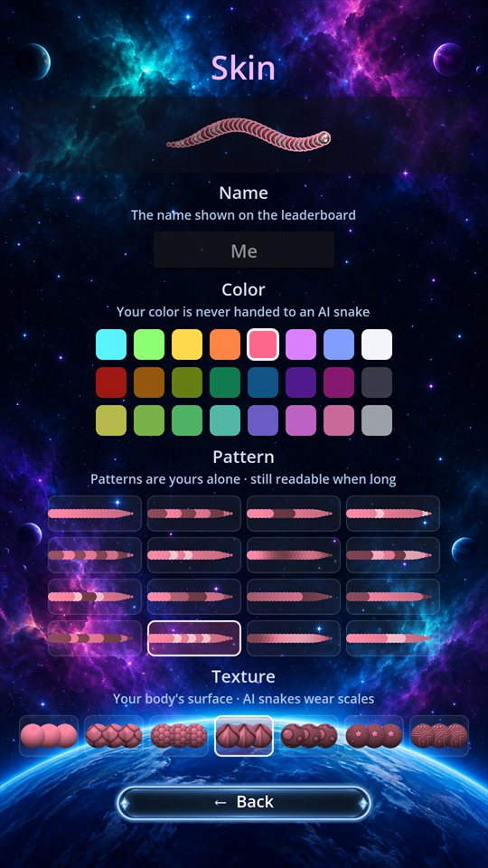
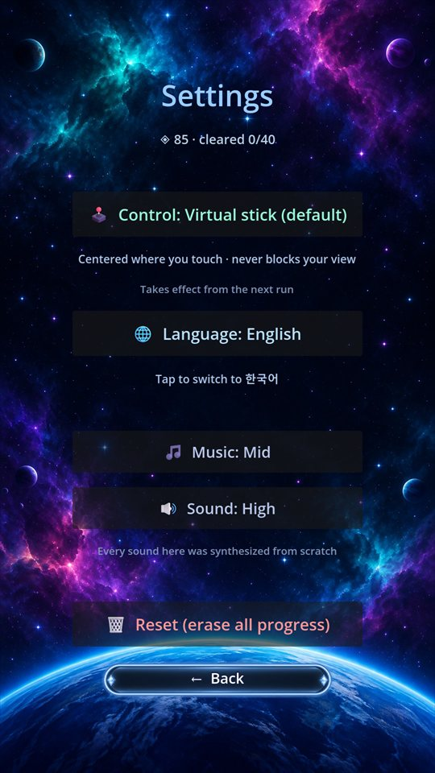
공 모양 행성 표면을 기어 다니며 먹이를 삼켜 몸을 늘리고, 다른 뱀을 가둬 잡아먹는 뱀 서바이벌입니다. 행성에는 끝이 없고 지평선 너머가 보이지 않아, 반대편에서 누가 자라고 있는지 레이더로 살펴야 합니다. 10분을 버티고 그 시점에 1위면 클리어입니다.
Crawl across the surface of a spherical planet, swallow food to grow longer, and trap other snakes to eat them. The planet has no edge and the far side is hidden past the horizon, so the radar is how you find out who is growing out of sight. Survive 10 minutes and be in 1st place at that moment to clear the stage.
난이도는 공격성, 사냥 사거리, 보충 속도, 먹이, 장애물 다섯 가지로 달라집니다. 행성마다 색과 이름이 다르고, 지형은 스테이지마다 고정입니다.
내 머리가 다른 뱀의 몸이나 장애물에 닿을 때만 죽고, 몸통끼리는 서로 통과합니다. 머리끼리 부딪히면 큰 쪽이 살아남습니다. 몸이 길수록 강해집니다.
행성에는 언제나 20마리가 있습니다. AI는 먹이만 줍지 않고, 작은 뱀의 앞을 막고, 큰 뱀이 다가오면 도망칩니다.
5초 뒤 작은 크기로 다시 들어옵니다. 광고를 보면 크기를 유지한 채 부활할 수도 있습니다. 한 게임에 한 번, 직접 선택할 때만입니다.
가상 조이스틱이 기본이며, 화면을 누른 곳이 중심이 됩니다. 설정에서 터치 조준으로 바꿀 수 있습니다. 두 번 누르면 달리고, 달리는 동안 길이가 줄어듭니다.
이름, 색 24종, 무늬 16종을 고릅니다. 고른 색과 무늬는 나만 쓰기 때문에 화면이 붐벼도 내 뱀을 바로 찾을 수 있습니다.
Difficulty varies across five axes: aggression, hunting range, respawn pace, food, and obstacles. Every planet has its own color and name, and terrain is fixed per stage.
You die only when your head touches another body or an obstacle, and bodies pass through each other. Head to head, the bigger one lives. The longer you are, the stronger you get.
Twenty snakes are always on the planet. They don't just pick up food. They cut off smaller snakes and flee when something bigger comes.
You come back five seconds later at rookie size. You can also watch an ad to revive at your current size, once per run and only if you choose to.
A floating virtual stick is the default, centered wherever you touch. Switch to touch aiming in settings. Double tap to dash, which burns length as you go.
Pick a name, one of 24 colors, and one of 16 patterns. Your color and pattern are yours alone, so you can spot your snake even on a crowded screen.
한국어와 영어를 지원합니다. 무료이며 광고가 포함되어 있고, 인앱 결제는 없습니다. 부활 광고는 직접 선택할 때만 재생됩니다. 계정 가입 없이 바로 시작하고, 진행 기록은 기기에 저장됩니다. 게임 도중 앱을 나가도 진행 중인 게임이 저장되어 이어서 할 수 있습니다.
Available in English and Korean. Free to play with ads, and no in-app purchases. The revive ad plays only when you choose it. No account needed; progress is saved on your device. Leave mid-run and the game is saved so you can pick up where you left off.